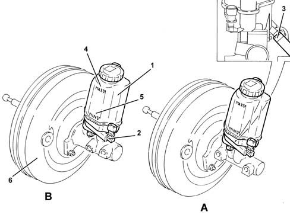

3330C brake pump, reservoir and load proportioning valve
- Path
- Descriptions > 33 BRAKING SYSTEM > 3330 HYDRAULIC BRAKING SYSTEM > 3330C brake pump, reservoir and load proportioning valve
- Kind
- system description
- Applies to
- engines: 1.6 TS, 2.0 TS; all production periods
- Interactive page
- https://sloeber94.github.io/elrnDB-a147/en/#/3022481
Applies to: engines: 1.6 TS, 2.0 TS; all production periods
CONSTRUCTION FEATURES
The brake pump is an integral part of and is supplied with the brake servo 3330D brake vacuum system.
The hydraulic brake system fluid reservoir is press-fitted to the upper part of the pump.
The reservoir is fitted with an attachment for connecting the supply pipe to the clutch release control hydraulic system 1820B HYDRAULIC CLUTCH SYSTEM.
On cars with a Selespeed transmission, the connection pipe to the clutch pump is plugged because clutch engagement and release are implemented automatically by the hydraulic speed control unit, which comes with a special reservoir 2127A hydraulic transmission external linkage.
The reservoir is fitted with a low fluid level indicator, which is activated when the fluid drops below a certain level. When the level is too low, a magnet in the reservoir float is aligned with a sensor in the indicator. The indicator sends a signal to the Body Computer 5505 ELECTRICAL CIRCUIT FOR INSTRUMENTS/INDICATORS, which turns on the panel warning light.

A - Brake pump for cars without VDC B - Brake pump for versions with VDC 1 - Brake fluid reservoir 2 - Low fluid level indicator 3 - Attachment for clutch pump supply line (except Selespeed versions) 4 - MAX fluid level mark 5 - MIN fluid level mark 6 - Brake servo